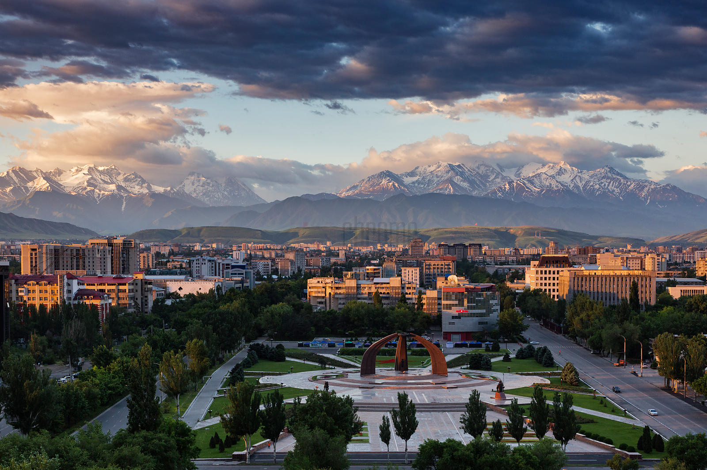
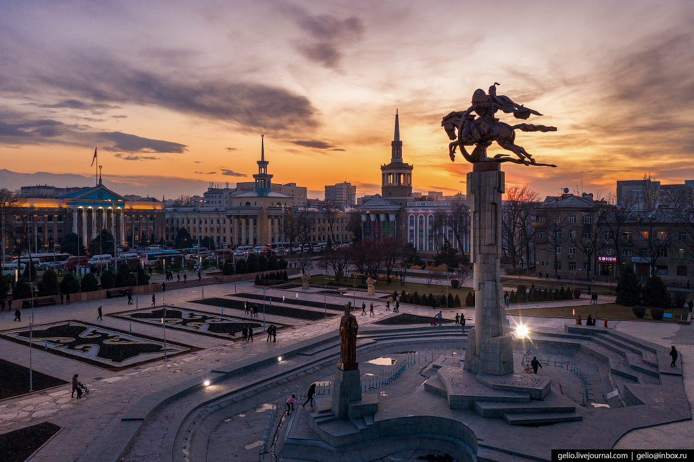

Only one-third of Kyrgyzstan’s population live in urban areas. Bishkek is the most populous city in the country and also the seat of government. The country has a population density of about 25 people per square km. The Five Biggest Cities In Kyrgyzstan. Bishkek. Bishkek is the largest and capital city of the Kyrgyz Republic and the Chuy Province’s administrative province. Bishkek is located at an elevation of about 2,600 get with a spectacular backdrop of the Tian Shan mountain ranges. The area in and around Bishkek is drain by the Chui River. The city is famous for its wide boulevards, Soviet-style apartment blocks, marble-faced public buildings, and more. Pollution levels are highest among all Kyrgyz cities in Bishkek.
 